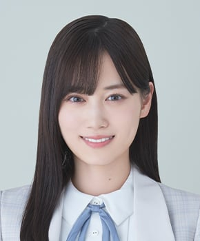
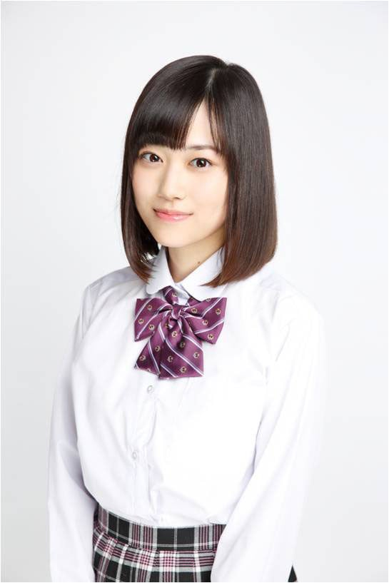
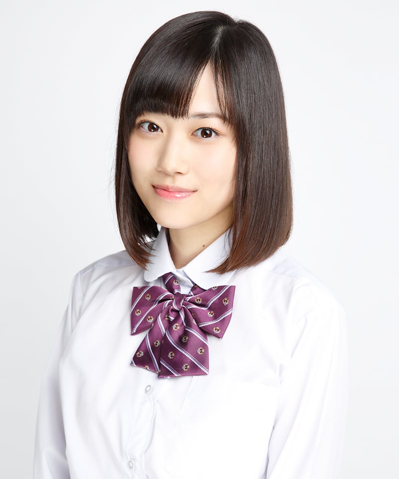
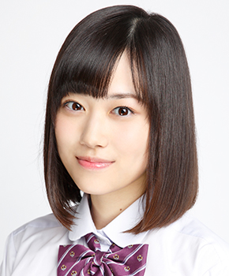
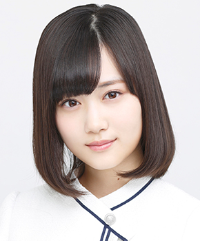
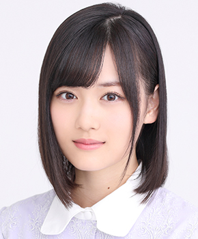
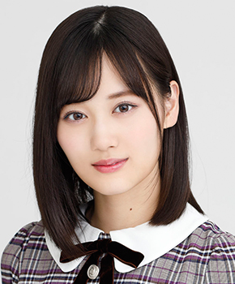
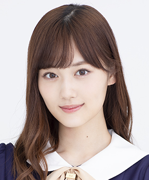
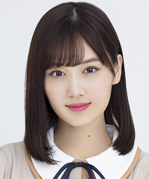

← メンバー一覧に戻る

チャンスは平等（2024年）・最新
乃木坂46 3期生 ・ 卒業・活動終了
センター曲：8曲（シングル表題曲センター：3曲） フォーメーション/歌唱参加：54曲ライブ記録：センター 104公演・出演記録のある公演 169公演ブログ記事：109件
学年：1999年度（同級生 全14人を見る）
フォーメーション統計：登場 29曲・フロント（1列目）21曲よく隣になるメンバー：梅澤美波（10回）、久保史緒里（8回）、与田祐希（5回）
未来の答え、不眠症、自分じゃない感じ、初恋ドア、僕は僕を好きになる、好きになってみた、人は夢を二度見る、チャンスは平等
この人のブログを見る ライブ記録で見る ☆ 推しに登録
推しに登録すると、トップページに「推しの新着」（最新のブログ）が出ます。








タップすると上の写真が切り替わります。上の写真をタップすると最新のアー写に戻ります。
 サカミチ
サカミチ